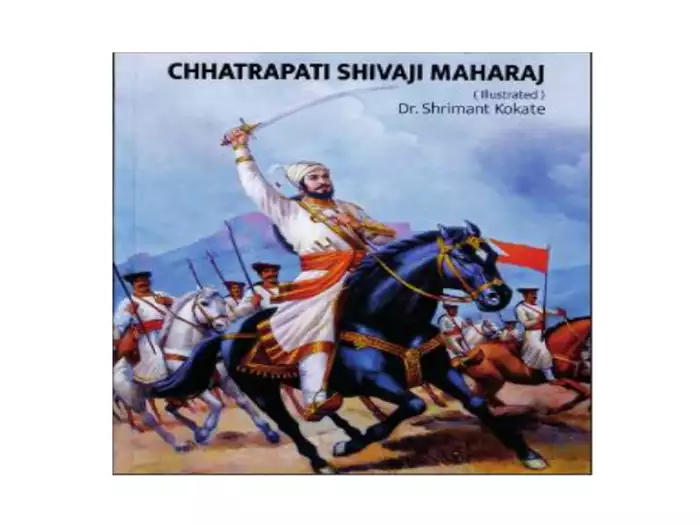

The recently released book focuses on how Chhatrapati Shivaji Maharaj, the Maratha king, took care of the interests of his subjects.
He made sure that farmers were happy and ordered that their haystacks not be touched.
He provided assistance to drought-affected farmers and gave them financial aid at zero interest.
The book also highlights how there was no discrimination during Shivaji’s rule.
The first twenty-five chapters provide a historical context of Shivaji’s upbringing by his revolutionary parents, Jijau and Shahajiraje, who instilled noble values in him.
The second half of the book includes pictorial examples of how Shivaji’s work influenced various aspects of Indian society, such as social, cultural, political, and educational spheres, and how his life inspired a revolution.
Dr. Shrimant Kokate
Dr. Shrimant Kokate is renowned for his four books on Shivaji, which have received great reviews and have been widely read. He has written a total of 10 books on various subjects. Dr. Shrimant Kokate, a well-known Marathi author and historian, is releasing his first English book today titled "Chhatrapati Shivaji Maharaj (Illustrated)", which has been translated by Dilip Chavan.
